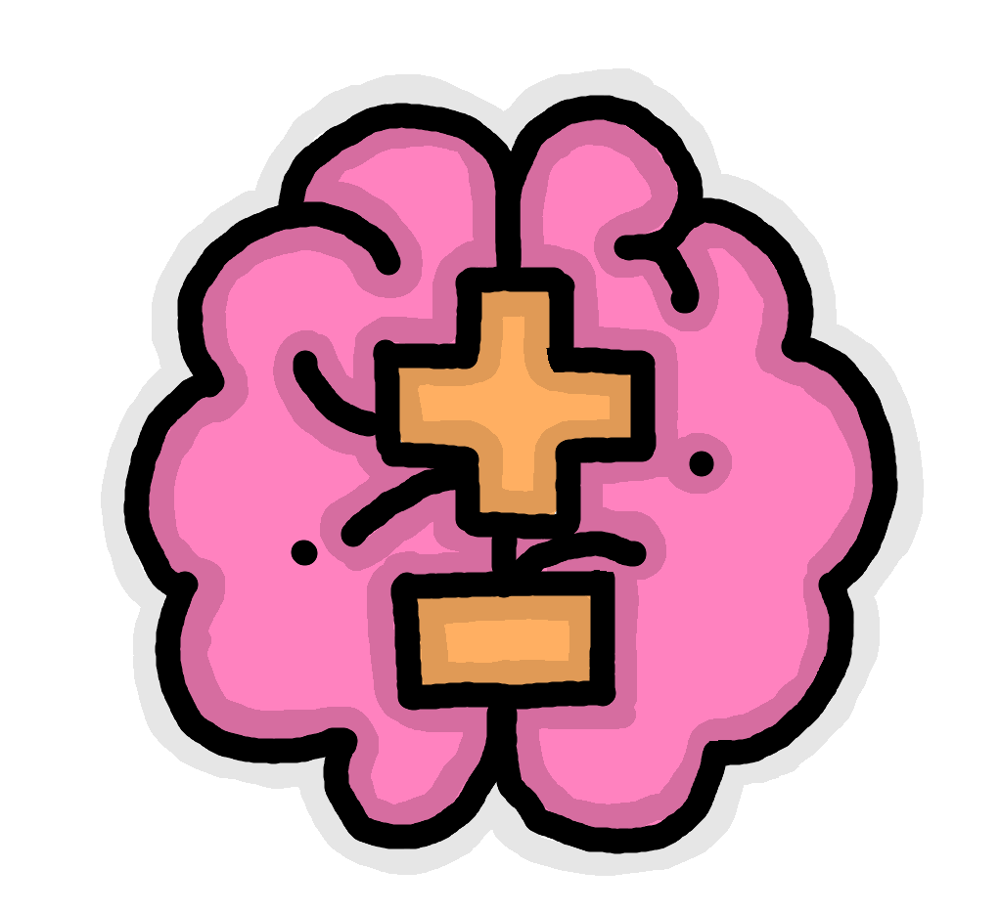
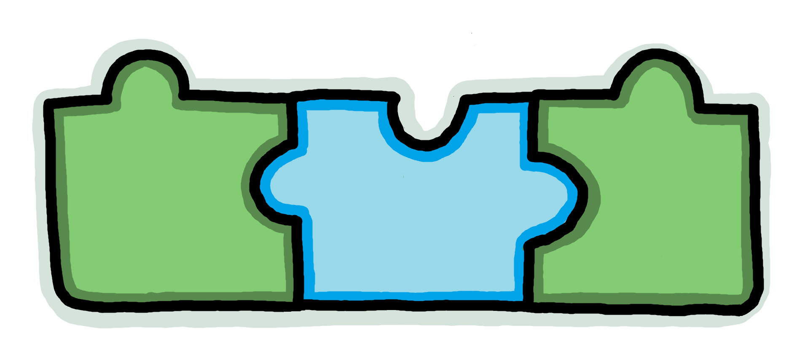
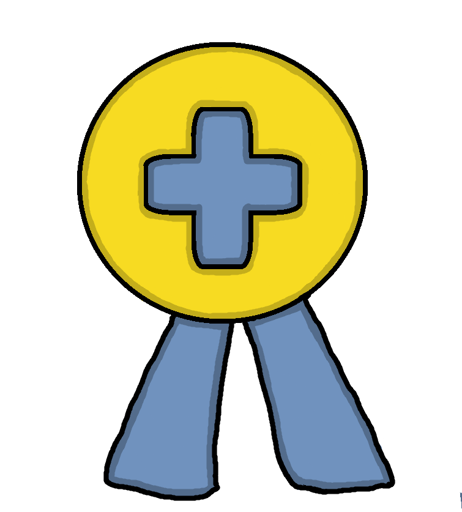

← Tornar a la carpeta principal
A continuació, trobareu les fitxes dels jocs d'agilitat mental.

Cicle: Cicle inicial
Objectiu: Resoldre operacions matemàtiques senzilles mitjançant el càlcul mental.
Sabers matemàtics:
Càlcul mental Descomposició
Competències:
Competència específica 4: Utilitzar el pensament computacional, descompondre en parts més petites, reconeixement patrons i dissenyant algorismes per solucionar problemes i situacions de la vida quotidiana

Cicle: Cicle inicial
Objectiu: Identificar la quantitat d’una imatge mitjançant la posició dels elements.
Sabers matemàtics:
Comptatge Patrons
Competències:
Competència específica 4: Utilitzar el pensament computacional, descompondre en parts més petites, reconeixement patrons i dissenyant algorismes per solucionar problemes i situacions de la vida quotidiana.
Competència específica 6: Comunicar i representar, de forma individual i col·lectiva, conceptes, procediments i resultats matemàtics utilitzant el llenguatge oral, escrit, gràfic, multimodal, en diferents formats i amb la terminologia matemàtica adequada, per donar significat i permanència a les idees matemàtiques.

Cicle: Cicle mitjà
Objectiu: Resoldre les sumes per aconseguir el màxim de punts.
Sabers matemàtics:
Càlcul mental Suma
Competències:
Competència específica 4: Utilitzar el pensament computacional, descompondre en parts més petites, reconeixement patrons i dissenyant algorismes per solucionar problemes i situacions de la vida quotidiana